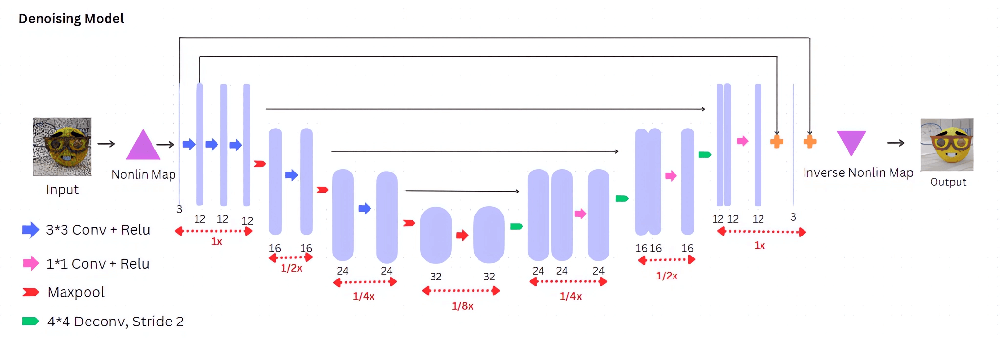
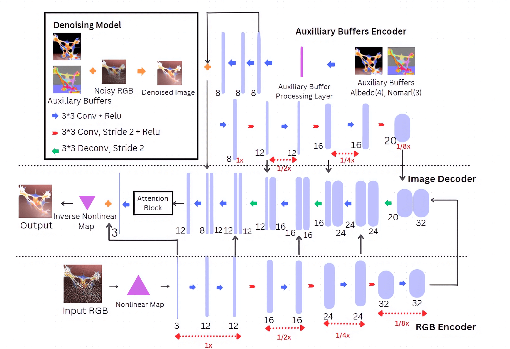
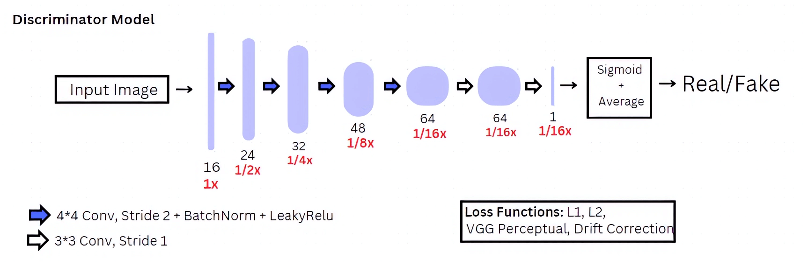

UTMIST Engineering Project | 2023-2024
Click on an image to view an interactive demo. You can drag to view from different angles, adjust parameter sliders to change the appearance, and edit the equations to change the shape and color.
For best experience, use a desktop device with a dedicated graphics card.
Project Website - project description, proposal, team members
GitHub Repository - source code for the renderer and inference engine
UTMIST Winter Showcase Presentation Slides - introduction, video, diagrams
Feedback Form - Anything you want to tell us!
UTMIST Main Website - Follow social media at bottom for updates!
➤ Residual U-Net with GAN and Combined Loss

➤ Attention U-Net with Auxiliary Buffer Input

➤ Discriminator, used for training of both models
